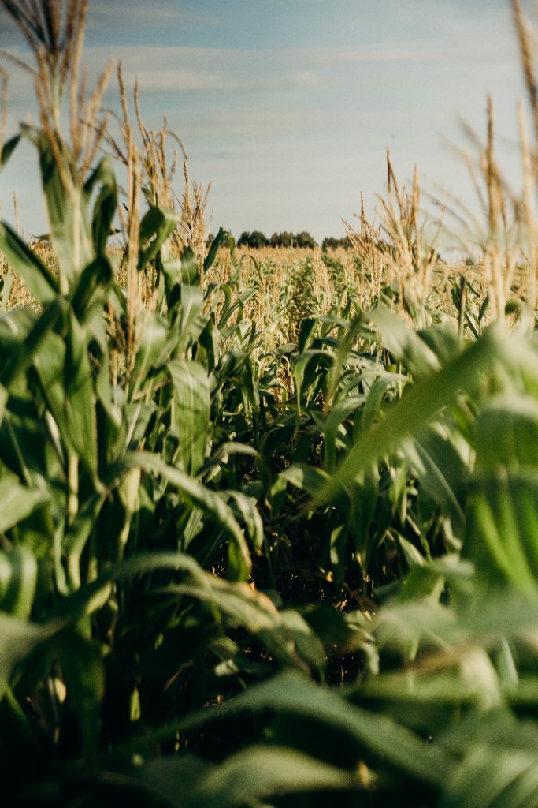

Americas
Corn, beans, squash, and tomatoes.
A culinary atlas
Every staple crop carries history, place, and people. Explore the regions that shaped global cuisines, then open a crop dossier. Sign in to keep research notes across sessions.
Four culinary regions. Each one opens a page of staple crops that define local food culture.
Quick comparison of major cereal yields by primary culinary region. Values are sample research figures for this course mock-up.
| Crop | Primary region | Annual yield (millions of tonnes) | Growth cycle |
|---|---|---|---|
| Maize (Corn) | Americas | 90–120 days | |
| Rice | Asia | 105–150 days | |
| Wheat | Europe | 110–130 days | |
| Sorghum | Africa | 90–140 days |